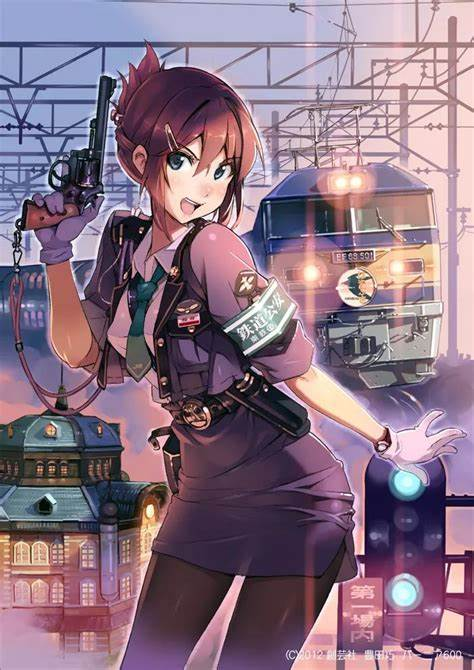

Anime: Second Dimension Culture
Japanese anime, as an influential cultural art form, has long crossed national borders, set off a craze around the world, and captured the hearts of countless readers. Since the mid-20th century, Japanese comics have begun to emerge. Take "Slam Dunk" as an example. This anime perfectly combines youth, passion and sports competition. Sakuragi Hanamichi's funny and persistent personality, Rukawa Kaede's handsomeness and skills, and the struggle and growth of the Xiangbei basketball team on the court have made countless readers obsessed with it. "Naruto" has constructed a grand world of ninjas. The disputes between ninja villages, the powerful ninjutsu of ninjas, and the protagonist Naruto's unremitting pursuit of becoming a Hokage show the power of courage, perseverance and bond. Its worldview setting is extremely rich, from the ninja hierarchy to various mysterious ninjutsu systems, from the cultural characteristics of different ninja villages to the historical origins hidden behind them, all allow readers to immerse themselves in it and continue to explore. Many anime have been adapted into animations, movies, TV series, etc. For example, "Spirited Away", an animated film adapted from Hayao Miyazaki's manga, has received high acclaim around the world, allowing more people to appreciate the profound connotation and unique charm of Japanese comics.